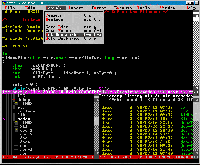

Overview
what is it ?
features
supported file types
supported platforms
on-line help
 What Is It ?
What Is It ?
- An Emacs editor biased towards UNIX users, working across platforms by
providing a consistent interface under UNIX, Microsoft Windows '95/'98/NT
and DOS operating systems.
- Fully featured editor, retaining the lightness of the original
MicroEmacs 3.8 with much enhanced capability.
- Small memory and disk footprint.
- A much enhanced version of the Danial Lawrence's original MicroEmacs 3.8
of 1988.
It is stressed that although Danial Lawrence's 3.8
version was used as a base, he has had no involvement in the development of
this distribution.
- To avoid any confusion with the original
MicroEmacs, this distribution should be referred
to as the JASSPA distribution.

Copyright © 2000-2002 Jasspa